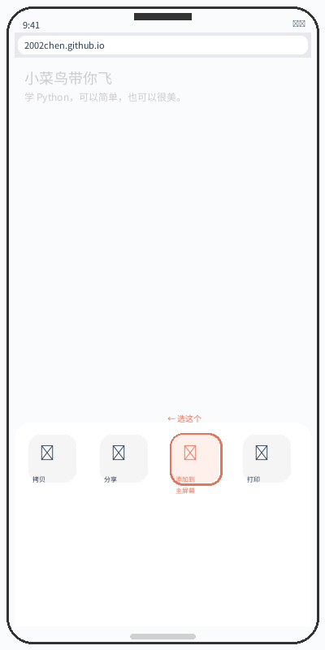
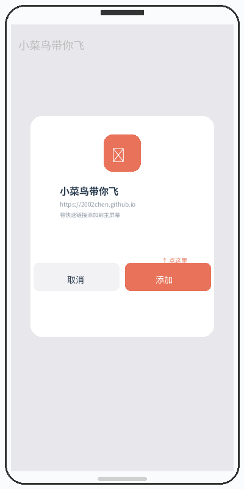
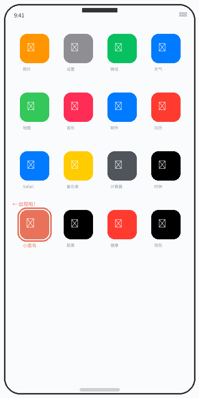
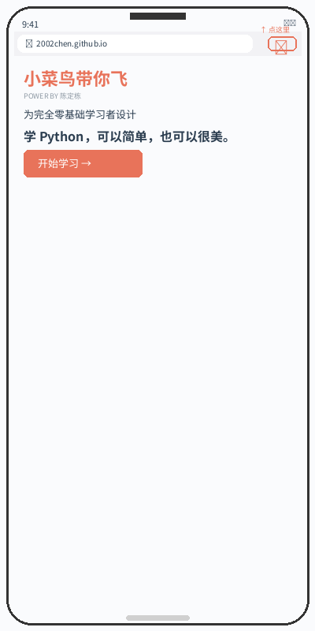
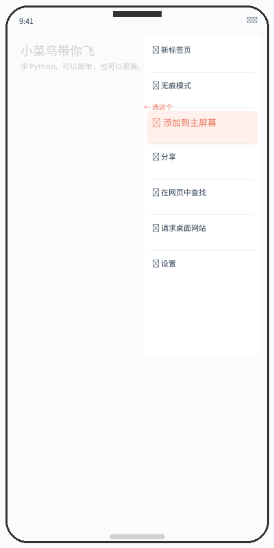
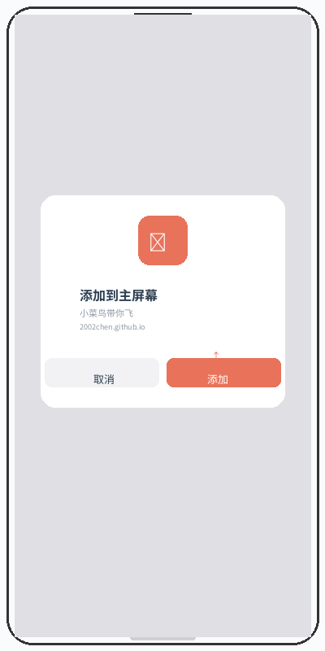
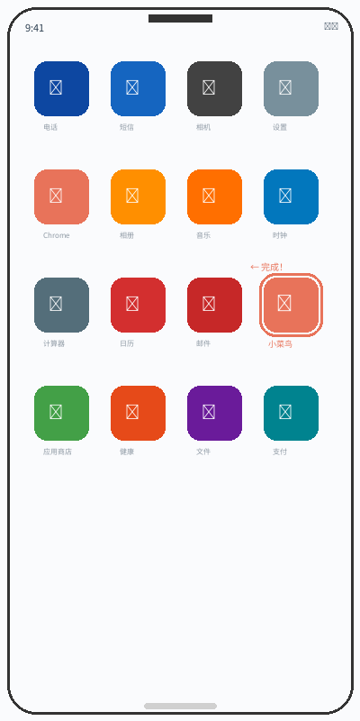
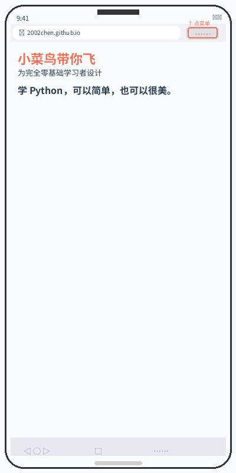
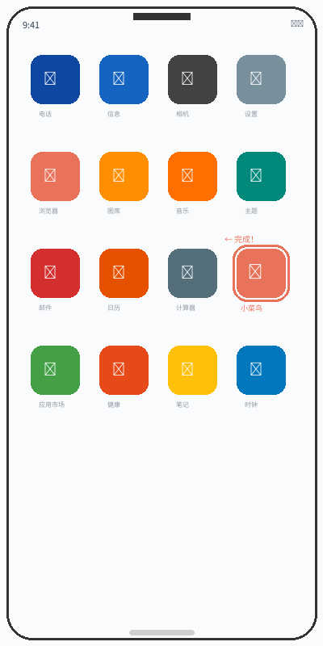

01
iPhone / iPad
用 Safari 添加到主屏幕
必须使用苹果自带的 Safari，Chrome 无法完成此操作。



02
Android
用 Chrome 添加到主屏幕
不同品牌的文字可能显示为“安装应用”或“添加到桌面”。



03
HarmonyOS
用华为浏览器添加到桌面
鸿蒙系统中的入口名称是“添加到桌面”。



找不到入口？
先退出微信内置浏览器
如果你是在微信里打开，点右上角三个点，选择“用浏览器打开”，再按对应系统操作。